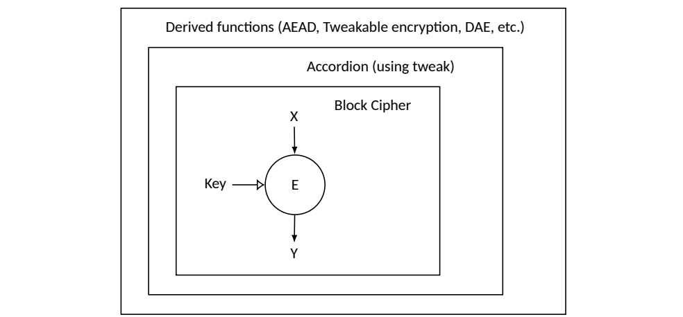
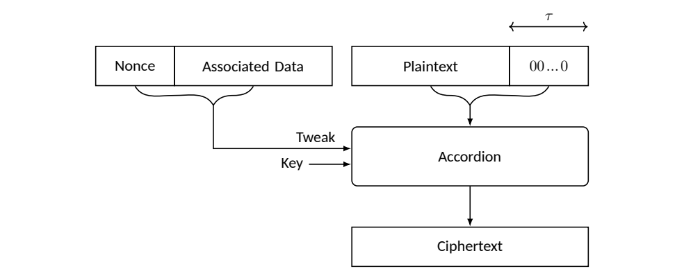
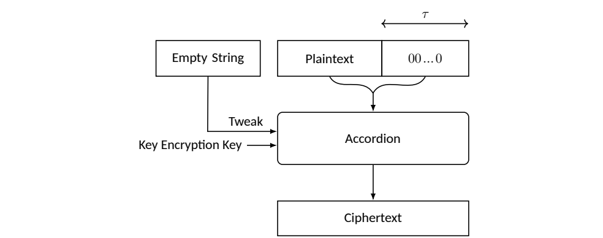

NIST IR 8552 日本語訳
英語タイトル : Requirements for Cryptographic Accordions日本語タイトル : 暗号アコーディオンの要件
公開日 : 2025-04-11
原文URL : https://csrc.nist.gov/pubs/ir/8552/final
翻訳編集 : 自動生成（有志による非公式の日本語訳）, 原文取得日 : 2026-10-31, 訳文 : 218 / 218 ブロック
[要約] NIST IR 8552 は、基盤となるブロック暗号から構成される、トゥイーカブルで可変入力長の強擬似ランダム置換（VIL-SPRP）として、暗号アコーディオンを紹介する報告書です。アコーディオンは、さまざまなサイズのメッセージの暗号処理を容易にしつつ、NIST SP 800-38 シリーズで規定された承認済みのブロック暗号の動作モードに比べて強化されたセキュリティを提供します。報告書は、関連する用語を導入し、セキュリティの目標と性能の目標、ブロックサイズ・鍵サイズ・トゥイークのサイズ・メッセージ長に関するパラメータの要件など、アコーディオンの設計要件を概説します。また、アコーディオンの 3 つの応用カテゴリを説明します。
NIST Interagency Report NIST IR 8552
NIST 省庁間報告書 NIST IR 8552
Requirements for Cryptographic Accordions
暗号アコーディオンの要件
Yu Long Chen Michael Davidson Morris Dworkin John Kelsey Yu Sasaki Meltem Sönmez Turan Donghoon Chang Nicky Mouha Alyssa Thompson
Yu Long Chen Michael Davidson Morris Dworkin John Kelsey Yu Sasaki Meltem Sönmez Turan Donghoon Chang Nicky Mouha Alyssa Thompson
This publication is available free of charge from: https://doi.org/10.6028/NIST.IR.8552
本刊行物は次のURLから無償で入手できます: https://doi.org/10.6028/NIST.IR.8552
NIST Interagency Report NIST IR 8552
NIST 省庁間報告書 NIST IR 8552
Requirements for Cryptographic Accordions
暗号アコーディオンの要件
Yu Long Chen Michael Davidson Morris Dworkin John Kelsey Yu Sasaki Meltem Sönmez Turan Computer Security Division Information Technology Laboratory
Yu Long Chen Michael Davidson Morris Dworkin John Kelsey Yu Sasaki Meltem Sönmez Turan Computer Security Division Information Technology Laboratory
Donghoon Chang Strativia Largo, MD
Donghoon Chang Strativia Largo, MD
Nicky Mouha FWI Fairfax, VA
Nicky Mouha FWI Fairfax, VA
Alyssa Thompson National Security Agency Guest Researcher, Computer Security Division Information Technology Laboratory
Alyssa Thompson National Security Agency Guest Researcher, Computer Security Division Information Technology Laboratory
This publication is available free of charge from: https://doi.org/10.6028/NIST.IR.8552
本刊行物は次のURLから無償で入手できます: https://doi.org/10.6028/NIST.IR.8552
April 2025
2025年4月
U.S. Department of Commerce Howard Lutnick, Secretary
米国商務省 Howard Lutnick 長官
National Institute of Standards and Technology
米国国立標準技術研究所
Craig Burkhardt, Acting Under Secretary of Commerce for Standards and Technology and Acting NIST Director
Craig Burkhardt、商務次官代理（標準・技術担当）兼 NIST 所長代理
Certain equipment, instruments, software, or materials, commercial or non-commercial, are identified in this paper in order to specify the experimental procedure adequately. Such identification does not imply recommendation or endorsement of any product or service by NIST, nor does it imply that the materials or equipment identified are necessarily the best available for the purpose.
本書では、実験手順を適切に特定するため、商用・非商用を問わず、特定の機器、計器、ソフトウェア、または資材を挙げている場合があります。このような特定は、NIST がいかなる製品やサービスも推奨または是認していることを意味せず、挙げた資材や機器がその目的に最適であるとは限らないことも意味しません。
There may be references in this publication to other publications currently under development by NIST in accordance with its assigned statutory responsibilities. The information in this publication, including concepts and methodologies, may be used by federal agencies even before the completion of such companion publications. Thus, until each publication is completed, current requirements, guidelines, and procedures, where they exist, remain operative. For planning and transition purposes, federal agencies may wish to closely follow the development of these new publications by NIST.
本刊行物には、NIST が法令上の責務に従って現在策定中の他の刊行物への言及が含まれる場合があります。概念や方法論を含む本刊行物の情報は、そうした関連刊行物の完成前であっても、連邦機関が利用できます。したがって、各刊行物が完成するまでは、現行の要件、ガイドライン、手順が存在する場合は、それらが引き続き有効です。計画や移行の目的から、連邦機関は NIST によるこれらの新しい刊行物の策定状況を注意深く追うべきです。
Organizations are encouraged to review all draft publications during public comment periods and provide feedback to NIST. Many NIST cybersecurity publications, other than the ones noted above, are available at https://csrc.nist.gov/publications
各組織は、パブリックコメント期間中にすべてのドラフト刊行物を確認し、NIST にフィードバックを提供することが推奨されています。上記以外の多くの NIST サイバーセキュリティ刊行物は https://csrc.nist.gov/publications で入手できます。
NIST Technical Series Policies Copyright, Use, and Licensing Statements NIST Technical Series Publication Identifier Syntax
NIST Technical Series Policies Copyright, Use, and Licensing Statements NIST Technical Series Publication Identifier Syntax
Publication History Approved by the NIST Editorial Review Board on 2025-04-02
Publication History Approved by the NIST Editorial Review Board on 2025-04-02
How to cite this NIST Technical Series Publication Yu Long Chen, Michael Davidson, Morris Dworkin, John Kelsey, Yu Sasaki, Meltem Sönmez Turan, Donghoon Chang, Nicky Mouha, Alyssa Thompson (2025) Requirements for Cryptographic Accordions. (National Institute of Standards and Technology, Gaithersburg, MD), NIST Interagency or Internal Report (IR) NIST IR 8552. https://doi.org/10.6028/NIST.IR.8552
How to cite this NIST Technical Series Publication Yu Long Chen, Michael Davidson, Morris Dworkin, John Kelsey, Yu Sasaki, Meltem Sönmez Turan, Donghoon Chang, Nicky Mouha, Alyssa Thompson (2025) Requirements for Cryptographic Accordions. (National Institute of Standards and Technology, Gaithersburg, MD), NIST Interagency or Internal Report (IR) NIST IR 8552. https://doi.org/10.6028/NIST.IR.8552
Author ORCID iDs Yu Long Chen: 0000-0002-6281-6430 Michael Davidson: 0000-0002-4862-5697 Morris Dworkin: 0000-0003-2745-9906 John Kelsey: 0000-0002-3427-1744 Yu Sasaki: 0000-0002-1273-2394 Meltem Sönmez Turan: 0000-0002-1950-7130 Donghoon Chang: 0009-0000-8496-703X Nicky Mouha: 0000-0001-8861-782X Alyssa Thompson: 0009-0009-8137-2589
Author ORCID iDs Yu Long Chen: 0000-0002-6281-6430 Michael Davidson: 0000-0002-4862-5697 Morris Dworkin: 0000-0003-2745-9906 John Kelsey: 0000-0002-3427-1744 Yu Sasaki: 0000-0002-1273-2394 Meltem Sönmez Turan: 0000-0002-1950-7130 Donghoon Chang: 0009-0000-8496-703X Nicky Mouha: 0000-0001-8861-782X Alyssa Thompson: 0009-0009-8137-2589
Contact Information ciphermodes@nist.gov
Contact Information ciphermodes@nist.gov
Additional Information Additional information about this publication is available at https://csrc.nist.gov/pubs/ir/8552/final, including related content, potential updates, and document history.
追加情報 本刊行物に関する追加情報は https://csrc.nist.gov/pubs/ir/8552/final で入手できます。関連コンテンツ、更新の可能性、文書の履歴も掲載されています。
All comments are subject to release under the Freedom of Information Act (FOIA).
すべてのコメントは、情報自由法（FOIA）に基づく公開の対象となります。
Abstract
要旨
This report introduces the cryptographic accordion as a tweakable, variable-input-length strong pseudorandom permutation (VIL-SPRP) that is constructed from an underlying block cipher. An accordion facilitates the cryptographic processing of messages of various sizes while offering enhanced security compared to the approved block cipher modes of operation that are specified in the NIST SP 800-38 series. This report introduces associated terminology, outlines design requirements for accordions, and describes three categories of applications for them.
本報告書は、基盤となるブロック暗号から構成される、トゥイーカブルで可変入力長の強擬似ランダム置換（VIL-SPRP）として、暗号アコーディオンを紹介します。アコーディオンは、さまざまなサイズのメッセージの暗号処理を容易にしつつ、NIST SP 800-38 シリーズで規定された承認済みのブロック暗号の動作モードに比べて強化されたセキュリティを提供します。本報告書は、関連する用語を導入し、アコーディオンの設計要件を概説し、アコーディオンの 3 つの応用カテゴリを説明します。
Keywords
キーワード
accordion; authenticated encryption; disk encryption; encode-then-encipher; key wrapping; length-preserving encryption.
accordion; authenticated encryption; disk encryption; encode-then-encipher; key wrapping; length-preserving encryption.
Reports on Computer Systems Technology
コンピュータシステム技術に関する報告書
The Information Technology Laboratory (ITL) at the National Institute of Standards and Technology (NIST) promotes the U.S. economy and public welfare by providing technical leadership for the Nation’s measurement and standards infrastructure. ITL develops tests, test methods, reference data, proof of concept implementations, and technical analyses to advance the development and productive use of information technology. ITL’s responsibilities include the development of management, administrative, technical, and physical standards and guidelines for the cost-effective security and privacy of other than national security-related information in federal information systems.
米国国立標準技術研究所（NIST）の情報技術研究所（ITL）は、国の測定・標準のインフラに技術的なリーダーシップを提供することで、米国経済と公共の福祉の向上に貢献しています。ITL は、情報技術の開発と生産的な利用を進めるため、テスト、テスト方法、参照データ、概念実証の実装、技術分析を開発しています。ITL の責務には、連邦情報システムにおける国家安全保障に関わらない情報について、費用対効果の高いセキュリティとプライバシーのための管理、運用、技術、物理に関する標準とガイドラインの策定が含まれます。
Table of Contents
目次
Acknowledgments
謝辞
While he was a guest researcher at NIST, Jinkeon Kang was a co-author of the discussion draft of this report [1] that was prepared for the NIST Worskhop on the Requirements for an Accordion Cipher Mode 2024. The participants in that workshop and the Third Workshop on Block Cipher Modes of Operation 2023 provided valuable feedback for the development of this publication.
Jinkeon Kang は、NIST の客員研究員であった間、NIST Workshop on the Requirements for an Accordion Cipher Mode 2024 のために作成された本報告書の討議用ドラフト [1] の共著者でした。そのワークショップと Third Workshop on Block Cipher Modes of Operation 2023 の参加者は、本刊行物の策定に貴重なフィードバックを寄せてくださいました。
The authors also appreciate the support of colleagues in NIST’s Computer Security Division, especially Andrew Regenscheid, Lily Chen, Ray Perlner, Daniel Smith-Tone, Elaine Barker, James Foti, and Sara Kerman.
著者らはまた、NIST のコンピュータセキュリティ部門の同僚、特に Andrew Regenscheid、Lily Chen、Ray Perlner、Daniel Smith-Tone、Elaine Barker、James Foti、Sara Kerman の支援に感謝します。
1. Introduction
1. はじめに
A mode of operation is a method that defines how a block cipher cryptographically processes (e.g., encrypts and/or authenticates) data beyond a single block length. The National Institute of Standards and Technology (NIST) Special Publication (SP) 800-38 series [2–10] specifies several modes that were submitted for NIST’s consideration from several different sources over many years to address a variety of security requirements and use cases.
動作モードとは、ブロック暗号が、単一のブロック長を超えるデータをどのように暗号処理（たとえば、暗号化や認証）するかを定める方法です。米国国立標準技術研究所（NIST）の Special Publication（SP）800-38 シリーズ [2–10] は、さまざまなセキュリティ要件とユースケースに対応するために、長年にわたり複数の異なる提案元から NIST の検討に提出された、いくつかのモードを規定しています。
NIST introduces the term cryptographic accordion — or simply accordion — to describe a technique constructed from an underlying block cipher that itself acts like a cipher on inputs of varying sizes. Thus, an accordion is simultaneously a cipher and a mode of the underlying block cipher. Formally, an accordion is defined as a tweakable, variable-input-length-strong pseudorandom permutation (VIL-SPRP) that is constructed from an underlying block cipher. NIST expects to develop one or more accordions with a generic proof of security.
NIST は、基盤となるブロック暗号から構成され、それ自体がさまざまなサイズの入力に対する暗号のように振る舞う技術を表すために、暗号アコーディオン、または単にアコーディオンという用語を導入します。したがって、アコーディオンは同時に、暗号であり、かつ基盤となるブロック暗号の動作モードでもあります。形式的には、アコーディオンは、基盤となるブロック暗号から構成される、トゥイーカブルで可変入力長の強擬似ランダム置換（VIL-SPRP）として定義されます。NIST は、汎用的な安全性証明を備えた 1 つ以上のアコーディオンを開発することを見込んでいます。
The limitations of the current NIST modes were identified in NIST Internal Report (IR) 8459 [11] as part of NIST’s review process under the auspices of the NIST Crypto Publication Review Board.1 NIST hosted the Third Workshop on Block Cipher Modes of Operation 20232 to discuss how to improve NIST’s modes portfolio, including desirable additional security features and a variety of proposed techniques. As a follow up, NIST hosted the NIST Workshop on the Requirements for an Accordion Cipher Mode 2024 [12] to 1) propose the development of an accordion as a comprehensive solution for a variety of cryptographic functionalities and 2) solicit feedback on the design requirements.3
現行の NIST モードの限界は、NIST Crypto Publication Review Board の主導による NIST のレビュープロセスの一環として、NIST Internal Report（IR）8459 [11] で特定されました。1NIST は、NIST のモードのポートフォリオをどう改善するかを議論するため、望ましい追加のセキュリティ機能や提案されたさまざまな技術を含めて、Third Workshop on Block Cipher Modes of Operation 20232 を開催しました。その後の取り組みとして、NIST は、1) さまざまな暗号機能の包括的な解決策としてのアコーディオンの開発を提案し、2) 設計要件についてのフィードバックを募るため、NIST Workshop on the Requirements for an Accordion Cipher Mode 2024 [12] を開催しました。3
In this report, the cryptographic functions that may be constructed from an accordion are called derived functions. These derived functions can use the properties of the accordion to offer improved security, usage bounds, and functionality over existing modes. For example, a derived function for authenticated encryption with associated data (AEAD) could provide additional security properties compared to Galois/Counter Mode (GCM) [6], such as nonce-misuse resistance, support for short tags, nonce hiding, and key commitment. These features could make the accordion-based derived function a more robust choice than GCM for many cryptographic applications.
本報告書では、アコーディオンから構成できる暗号関数を派生関数と呼びます。これらの派生関数は、アコーディオンの特性を利用して、既存のモードよりも優れたセキュリティ、使用上の限界、機能を提供できます。たとえば、関連データ付き認証付き暗号（AEAD）の派生関数は、ナンス誤用耐性、短いタグのサポート、ナンスの秘匿、鍵コミットメントなど、Galois/Counter Mode（GCM）[6] に比べて追加のセキュリティ特性を提供できます。これらの機能により、アコーディオンベースの派生関数は、多くの暗号アプリケーションにとって、GCM よりも堅牢な選択肢になりえます。
Another benefit is that an accordion facilitates the conceptual separation of the enciphering from the functional roles of different types of inputs (e.g., confidential data, associated data, randomization values, and nonces). This separation should promote easier, faster, and simpler deployment compared to the ad hoc development of dedicated modes for specific functionalities and security features.
もう 1 つの利点は、アコーディオンによって、暗号化の処理と、種類の異なる入力（たとえば、機密データ、関連データ、ランダム化値、ナンス）の機能上の役割とを、概念的に切り離しやすくなることです。この分離により、特定の機能やセキュリティ機能のための専用モードを場当たり的に開発する場合に比べて、展開がより容易で迅速、かつ単純になるはずです。
1.1. Historical Background
1.1. 歴史的背景
The notion of an accordion as a tweakable VIL-SPRP evolved from related terminology in the academic literature. The term strong pseudorandom permutation (SPRP) formally captures the idea that changing any bit of the input randomizes every bit of output for both the permutation and its inverse. The term enciphering mode describes a block cipher mode of operation that provides length-preserving encryption for variable input length (VIL) messages. The term tweakable enciphering mode indicates that the enciphering mode would take an additional input called a tweak, which was first introduced only in the context of a tweakable block cipher [13] (i.e., with fixed-length input).
トゥイーカブルな VIL-SPRP としてのアコーディオンという概念は、学術文献の関連用語から発展しました。強擬似ランダム置換（SPRP）という用語は、入力のどのビットを変えても、置換とその逆置換の両方で出力のすべてのビットがランダム化されるという考え方を形式的に表現したものです。暗号化モード（enciphering mode）という用語は、可変入力長（VIL）のメッセージに対して長さを保存する暗号化を提供するブロック暗号の動作モードを表します。トゥイーカブル暗号化モード（tweakable enciphering mode）という用語は、暗号化モードがトゥイークと呼ばれる追加の入力を取ることを示します。トゥイークは、当初はトゥイーカブルブロック暗号 [13]（すなわち、固定長入力のもの）の文脈でのみ導入されました。
Some early works are CMC [14], EME [15], and the Hasty Pudding Cipher [16]. Several related design approaches have since emerged, such as AEZ [17], HCTR2 [18], Glevian and Vigornian [19], and Docked Double Decker [20]. There are also constructions based on other primitives (e.g., XChacha [21]) and tweakable block ciphers (e.g., Adiantum [22] and ZCZ [23]). Bellare and Rogaway’s encode-then-encipher encryption [24] is an example of a technique that could be applied to an accordion to achieve authenticated encryption. Another category of techniques that support variable input lengths is format-preserving encryption (FPE), though the input domain is usually small in this case. Moreover, NIST’s standard FF1 [10] for FPE, although AES-based, is expected to perform much less efficiently than a well-designed accordion.
初期の研究には、CMC [14]、EME [15]、Hasty Pudding Cipher [16] があります。その後、AEZ [17]、HCTR2 [18]、Glevian と Vigornian [19]、Docked Double Decker [20] など、関連する設計アプローチがいくつか現れました。他のプリミティブ（たとえば、XChacha [21]）やトゥイーカブルブロック暗号（たとえば、Adiantum [22] や ZCZ [23]）に基づく構成もあります。Bellare と Rogaway の encode-then-encipher 暗号化 [24] は、アコーディオンに適用して認証付き暗号を実現できる技術の一例です。可変入力長をサポートする技術の別のカテゴリに、フォーマット保存暗号化（FPE）がありますが、この場合、入力の領域は通常小さくなります。さらに、FPE 向けの NIST 標準 FF1 [10] は、AES ベースではあるものの、適切に設計されたアコーディオンよりはるかに効率が低いと見込まれます。
While none of the above designs may meet the exact requirements that are outlined in this document, they provide valuable background and reference material.
上記の設計のいずれも、本書で概説する正確な要件を満たさない場合がありますが、貴重な背景と参照資料を提供します。
1.2. Layers of Components
1.2. 構成要素の階層
An accordion is one layer of a larger process for achieving a cryptographic functionality, as illustrated in Fig. 1. In particular, the underlying block cipher is the innermost layer, which is called by the accordion. The accordion is called by a derived function that defines how the accordion will be used but does not necessarily provide additional cryptographic processing of the inputs. For example, a derived function could provide AEAD functionality by encoding its inputs and providing them to the accordion. The derived function would then be called by an application, such as the Transport Layer Security (TLS) protocol for secure communication on the internet. One motivation for the development of an accordion is that it can support a variety of functionalities, which are currently met by ad hoc or dedicated modes of operation.
アコーディオンは、図 1 に示すように、暗号機能を実現するより大きなプロセスの 1 つの層です。特に、基盤となるブロック暗号は最も内側の層であり、アコーディオンから呼び出されます。アコーディオンは、アコーディオンをどう使うかを定めるものの、入力に対する追加の暗号処理を必ずしも提供しない派生関数から呼び出されます。たとえば、派生関数は、入力を符号化してアコーディオンに渡すことで、AEAD の機能を提供できます。派生関数はその後、インターネット上の安全な通信のための Transport Layer Security（TLS）プロトコルなどのアプリケーションから呼び出されます。アコーディオンを開発する動機の 1 つは、現在は場当たり的な、あるいは専用の動作モードで満たされているさまざまな機能を、アコーディオンがサポートできることです。
The derived function layer will specify an encoding for the inputs to the accordion, and the accordion will specify the inputs for the block cipher. For an encryption application, the outer layer takes in the raw data to be encrypted and applies an encoding (e.g., by adding some integrity check bits). The shared secret or master key provided to the outer layer may be used directly as the encryption key for the accordion or to specify some new accordion key. Using any other inputs provided, the derived function layer defines a tweak for the accordion. The accordion tweak, encoded message, and accordion key are used to call the accordion encryption function. Within the accordion encryption, a block cipher key, which may be the same as the accordion key, is used to call the block cipher. The encoded message blocks are input to the block cipher encryption, and ciphertext blocks are returned. The accordion collects the ciphertext blocks into a single ciphertext, which is returned to the derived function.
派生関数の層は、アコーディオンへの入力の符号化を指定し、アコーディオンは、ブロック暗号への入力を指定します。暗号化のアプリケーションでは、外側の層が、暗号化する生データを受け取り、符号化を適用します（たとえば、完全性チェック用のビットを追加します）。外側の層に与えられる共有シークレット鍵またはマスター鍵は、アコーディオンの暗号化鍵として直接使われることも、新しいアコーディオン鍵を指定するために使われることもあります。派生関数の層は、与えられたその他の入力を使って、アコーディオンのトゥイークを定めます。アコーディオンのトゥイーク、符号化されたメッセージ、アコーディオン鍵が、アコーディオンの暗号化関数の呼び出しに使われます。アコーディオンの暗号化の内部では、アコーディオン鍵と同じ場合もあるブロック暗号の鍵を使って、ブロック暗号を呼び出します。符号化されたメッセージのブロックがブロック暗号の暗号化に入力され、暗号文ブロックが返されます。アコーディオンは、暗号文ブロックを 1 つの暗号文にまとめ、それが派生関数に返されます。

3重の入れ子の箱の図です。外側の箱は「Derived functions (AEAD, Tweakable encryption, DAE, etc.)」、中間の箱は「Accordion (using tweak)」、内側の箱は「Block Cipher」です。内側の箱の中で、円「E」に上から「X」、左から「Key」が入り、下へ「Y」が出ます。
Figure 1. Layered structure of the accordion and derived functions
図 1. アコーディオンと派生関数の階層構造
When the layer is clear from the context, the terminology can be simplified. For example, within the accordion level, the terms accordion key and encoded message can be shortened to the key and the message.
文脈から層が明らかな場合は、用語を簡略化できます。たとえば、アコーディオンのレベルでは、アコーディオン鍵と符号化されたメッセージという用語を、鍵とメッセージに短縮できます。
NIST intends to develop and standardize an accordion that can support derived functions for at least three applications: AEAD, tweakable encryption, and deterministic authenticated encryption.
NIST は、少なくとも 3 つのアプリケーション、すなわち AEAD、トゥイーカブル暗号化、決定的認証付き暗号の派生関数をサポートできるアコーディオンを開発し、標準化することを意図しています。
2. The Accordion
2. アコーディオン
This section elaborates on the notation, definitions, and properties envisioned for approved accordions.
本節では、承認済みのアコーディオンについて想定する表記、定義、特性を詳しく説明します。
2.1. Notation
2.1. 表記
An accordion will have several parameters that are fixed within a given instance. The eventual accordion standard may support multiple parameter sets. The following table provides the notation for elements of an accordion.
アコーディオンには、特定のインスタンス内で固定されるパラメータがいくつかあります。最終的なアコーディオン標準は、複数のパラメータセットをサポートする可能性があります。次の表は、アコーディオンの要素の表記を示します。
| Symbol | Definition |
|---|---|
| \(a\) | Integer such that \(ag\) is the minimum allowed message size in bits |
| \(b\) | Integer such that \(bg\) is the maximum allowed message size in bits |
| \(C\) | Ciphertext |
| \(E\) | Underlying block cipher |
| \(g\) | Granularity of message sizes |
| \(K\) | Secret key |
| \(k\) | Length of the secret key \(K\) in bits |
| \(\ell\) | Length of the message \(M\) in bits |
| \(M\) | Message |
| \(n\) | Block size of block cipher \(E\) |
| \(T\) | Tweak |
| \(s\) | Length of tweak in bits |
| \(s_{min}\) | Minimum allowed bit size for tweak \(T\) |
| \(s_{max}\) | Maximum allowed bit size for tweak \(T\) |
| 記号 | 定義 |
|---|---|
| \(a\) | \(ag\) が許容される最小のメッセージサイズ（ビット）となる整数 |
| \(b\) | \(bg\) が許容される最大のメッセージサイズ（ビット）となる整数 |
| \(C\) | 暗号文 |
| \(E\) | 基盤となるブロック暗号 |
| \(g\) | メッセージサイズの粒度 |
| \(K\) | 共通鍵 |
| \(k\) | 共通鍵 \(K\) の長さ（ビット） |
| \(\ell\) | メッセージ \(M\) の長さ（ビット） |
| \(M\) | メッセージ |
| \(n\) | ブロック暗号 \(E\) のブロックサイズ |
| \(T\) | トゥイーク |
| \(s\) | トゥイークの長さ（ビット） |
| \(s_{min}\) | トゥイーク \(T\) に許容される最小のビットサイズ |
| \(s_{max}\) | トゥイーク \(T\) に許容される最大のビットサイズ |
An accordion consists of the encryption algorithm \(\mathtt{A.enc}\) and the decryption algorithm \(\mathtt{A.dec}\).4 The three inputs to \(\mathtt{A.enc}\) are a secret key \(K \in \{0,1\}^k\); a tweak \(T \in \{0,1\}^s\), where \(s_{min} \leq s \leq s_{max}\); and a message \(M \in \{0,1\}^\ell\), where \(\ell \in \{ag, (a+1)g, \ldots, bg\}\). The output is a ciphertext \(C \in \{0,1\}^\ell\):
アコーディオンは、暗号化アルゴリズム \(\mathtt{A.enc}\) と復号アルゴリズム \(\mathtt{A.dec}\) からなります。4\(\mathtt{A.enc}\) への 3 つの入力は、共通鍵 \(K \in \{0,1\}^k\)、トゥイーク \(T \in \{0,1\}^s\)（ただし \(s_{min} \leq s \leq s_{max}\)）、メッセージ \(M \in \{0,1\}^\ell\)（ただし \(\ell \in \{ag, (a+1)g, \ldots, bg\}\)）です。出力は暗号文 \(C \in \{0,1\}^\ell\) です。
For any fixed values of \(K\) and \(T\), \(\mathtt{A.enc}\) is a permutation, and the decryption algorithm \(\mathtt{A.dec}\) is its inverse so that
\(K\) と \(T\) の任意の固定値に対して、\(\mathtt{A.enc}\) は置換であり、復号アルゴリズム \(\mathtt{A.dec}\) はその逆であるため、次が成り立ちます。
2.2. Security Targets
2.2. セキュリティの目標
An accordion design should support each of the following security goals to the highest extent reasonable, and a specification for the design should include analysis of the security goals and identify the level of security achieved for each.
アコーディオンの設計は、次の各セキュリティ目標を合理的な範囲で最大限にサポートすべきであり、設計の仕様には、セキュリティ目標の分析を含め、それぞれで達成されるセキュリティのレベルを特定すべきです。
2.2.1. Formal Goal
2.2.1. 形式的な目標
A \((q, \sigma, t)\)-distinguisher against an accordion is an algorithm \(\mathcal{D}\) making at most \(q\) oracle queries with the total number of queried blocks being at most \(\sigma\), running in time at most \(t\), and outputting a single bit \(b\). The following game defines the security that is expected from this construction:
アコーディオンに対する \((q, \sigma, t)\)-識別器とは、\(\mathcal{D}\) で表され、最大 \(q\) 回のオラクルクエリを行い、問い合わせるブロックの総数が最大 \(\sigma\)、実行時間が最大 \(t\) で、1 ビット \(b\) を出力するアルゴリズムです。次のゲームが、この構成に期待されるセキュリティを定義します。
1.At the beginning of the game, the challenger generates a bit \(b\) and a key \(K\) uniformly at random.
1.ゲームの開始時に、チャレンジャーが、ビット \(b\) と鍵 \(K\) を一様ランダムに生成します。
2.The distinguisher \(\mathcal{D}\) is allowed to make up to \(q\) queries to the challenger of the form encrypt\((T, x)\) or decrypt\((T, x)\).
2.識別器 \(\mathcal{D}\) は、最大 \(q\) 回、チャレンジャーに対して encrypt\((T, x)\) または decrypt\((T, x)\) の形式のクエリを行えます。
(a) If \(b = 0\), the challenger answers these queries as follows:
(a) \(b = 0\) の場合、チャレンジャーはこれらのクエリに次のように答えます。
(b) If \(b = 1\), then for each distinct choice of \((T, |x|)\), where \(|x|\) denotes the length of \(x\) in bits, the challenger selects and remembers a new random permutation on \(2^{|x|}\) elements, \(\Pi_{T,|x|}\). It answers queries using \(\Pi_{T,|x|}, \Pi^{-1}_{T,|x|}\) as follows:
(b) \(b = 1\) の場合、\((T, |x|)\) の異なる選択ごとに（\(|x|\) は \(x\) のビット長を表す）、チャレンジャーは \(2^{|x|}\) 個の要素上の新しいランダム置換 \(\Pi_{T,|x|}\) を選んで記憶します。チャレンジャーは、\(\Pi_{T,|x|}, \Pi^{-1}_{T,|x|}\) を使って、クエリに次のように答えます。
3.After making \(q\) such queries, the distinguisher \(\mathcal{D}\) must guess \(b\).
3.このようなクエリを \(q\) 回行った後、識別器 \(\mathcal{D}\) は \(b\) を推測しなければなりません。
An accordion is required to ensure that for any \((q, \sigma, t)\)-distinguisher \(\mathcal{D}\), the advantage of winning this game is negligibly small for relevant values of \(q\), \(\sigma\), and \(t\). The relevant values for \(q\), \(\sigma\), and \(t\) will depend on the block size, the key size, the accordion, and the computation model used for the adversary. For example, the time \(t\) for a purely classical adversary will always be bounded above by \(2^{|K|}\). Additionally, NIST may consider various approaches to defining the time parameter \(t\) with respect to parallelization, memory access costs, communications overhead, and other estimated costs of an attack and may relate relevant values of \(t\) to the security strength categories defined in the NIST PQC standardization process [25] and used in NIST’s transition plan to PQC [26].
アコーディオンは、任意の \((q, \sigma, t)\)-識別器 \(\mathcal{D}\) について、このゲームに勝つアドバンテージが、\(q\)、\(\sigma\)、\(t\) の関連する値に対して無視できるほど小さいことを確実にすることが求められます。\(q\)、\(\sigma\)、\(t\) の関連する値は、ブロックサイズ、鍵サイズ、アコーディオン、攻撃者に使う計算モデルによって決まります。たとえば、純粋に古典的な攻撃者の時間 \(t\) は、常に \(2^{|K|}\) で上から抑えられます。さらに、NIST は、並列化、メモリアクセスのコスト、通信のオーバーヘッド、その他の攻撃の推定コストに関して、時間パラメータ \(t\) を定義するさまざまなアプローチを検討する場合があり、\(t\) の関連する値を、NIST の PQC 標準化プロセス [25] で定義され、NIST の PQC への移行計画 [26] で使われているセキュリティ強度のカテゴリと関連付ける場合があります。
2.2.2. Beyond-Birthday-Bound Security
2.2.2. バースデー限界を超えるセキュリティ
The usage bounds of many cryptographic techniques are limited by the “birthday bound,” where collisions (i.e., repetitions among a set of randomly generated data blocks) can be expected to occur. A technique that is specifically designed to provide “beyond-birthday-bound” (BBB) security against generic cryptanalytic attacks would support less restrictive usage bounds on the amount of data that is processed per key.
多くの暗号技術の使用上の限界は、衝突（すなわち、ランダムに生成されたデータブロックの集合の中での重複）が発生すると見込まれる「バースデー限界」によって制限されます。汎用的な暗号解読攻撃に対して「バースデー限界を超える」（BBB）セキュリティを提供するよう特に設計された技術は、鍵あたりで処理するデータ量に対する使用上の限界の制約が、より緩くなります。
More formally, for an accordion to support BBB security, the advantage of winning the game defined in Sec. 2.2.1 against any \((q, \sigma, t)\)-distinguisher \(\mathcal{D}\) should be negligibly small, even when \(2^{n/2}\) or more blocks of input are processed. Moreover, NIST expects the BBB security to hold for all queries, including multiple queries with the same tweak.
より形式的には、アコーディオンが BBB セキュリティをサポートするには、任意の \((q, \sigma, t)\)-識別器 \(\mathcal{D}\) に対して、2.2.1 節で定義したゲームに勝つアドバンテージは、\(2^{n/2}\) ブロック以上の入力が処理される場合でも、無視できるほど小さくすべきです。さらに、NIST は、同じトゥイークでの複数のクエリを含め、すべてのクエリに対して BBB セキュリティが成り立つと期待しています。
2.2.3. Multi-User Security
2.2.3. マルチユーザーセキュリティ
Security bounds for primitives (e.g., an accordion or derived function) are typically given for a single user. Multi-user security considers how the security of these primitives changes as the number of independent users of the primitive gets larger. There are generic bounds on multi-user security, but a complete analysis requires consideration of how a given construction of a primitive affects its multi-user security (e.g., [27–36]).
プリミティブ（たとえば、アコーディオンや派生関数）のセキュリティ限界は、通常、単一のユーザーについて与えられます。マルチユーザーセキュリティは、プリミティブの独立したユーザーの数が増えるにつれて、これらのプリミティブのセキュリティがどう変化するかを考慮します。マルチユーザーセキュリティには汎用的な限界がありますが、完全な分析には、プリミティブの特定の構成がマルチユーザーセキュリティにどう影響するかの考慮が必要です（たとえば、[27–36]）。
Evaluating how security degrades as the number of users grows is a challenging technical problem. While the generic bounds are acceptable, NIST prefers to standardize an accordion with better multi-user security than is provided by generic bounds.
ユーザー数が増えるにつれてセキュリティがどう劣化するかを評価することは、技術的に困難な問題です。汎用的な限界は許容できるものの、NIST は、汎用的な限界で提供されるより優れたマルチユーザーセキュリティを持つアコーディオンを標準化することを望んでいます。
2.2.4. Key-Dependent-Input Security
2.2.4. 鍵依存入力に対するセキュリティ
Some applications involve encrypting inputs that include the key or are derived from the key in some way. For example, when the operating system swaps the contents of some memory page to disk, the storage encryption mode being used could encrypt a copy of its own key. The security proofs of most chaining modes do not cover this use case; the property required to ensure security is called security against key-dependent inputs (KDI security) [37–39]. As shown in [39], it is impossible to construct a KDI-secure deterministic construction (e.g., the accordion) if there is no restriction on generating KDIs.
一部のアプリケーションでは、鍵を含む、あるいは何らかの形で鍵から導出された入力を暗号化します。たとえば、オペレーティングシステムが、メモリページの内容をディスクにスワップする際、使用中のストレージ暗号化モードが、自らの鍵のコピーを暗号化する場合があります。ほとんどのチェーニングモードの安全性証明は、このユースケースを対象としていません。セキュリティを確保するために必要な性質は、鍵依存入力に対するセキュリティ（KDI セキュリティ）と呼ばれます [37–39]。[39] で示されているとおり、KDI の生成に制限がない場合、KDI に対して安全な決定的構成（たとえば、アコーディオン）を構築することは不可能です。
However, it is expected that the typical application of an accordion for disk encryption will not have practical attacks in the KDI setting, as the attacks that were applicable to the initial drafts of the IEEE 1619 standard [11] are unlikely to apply to the setting where an accordion encrypts plaintexts whose size corresponds to an entire disk sector.
しかし、ディスク暗号化へのアコーディオンの典型的な適用では、KDI の設定下で実用的な攻撃は生じないと見込まれます。IEEE 1619 標準 [11] の初期のドラフトに適用できた攻撃は、アコーディオンがディスクセクター全体に相当するサイズの平文を暗号化する設定には適用できそうにないためです。
2.2.5. Post-Quantum Security
2.2.5. 耐量子セキュリティ
NIST is interested in both analysis and security proofs of the accordion in a quantum setting following the Q1 model [40–42], which assumes that a quantum adversary can only interact with the target primitive (i.e., make queries to Encrypt(T,x) and Decrypt(T,x)) through classical communication.
NIST は、量子攻撃者が対象のプリミティブと古典的な通信を通じてのみやり取りできる（すなわち、Encrypt(T,x) と Decrypt(T,x) へのクエリのみを行える）と仮定する Q1 モデル [40–42] に従う、量子設定におけるアコーディオンの分析と安全性証明の両方に関心があります。
2.3. Performance Targets
2.3. 性能の目標
While performance is not as critical as security, the better an accordion performs, the more useful it is likely to be. The most important platform is likely to be relatively powerful processors in desktop or laptop computers and those used in cloud environments with hardware AES support. Performance in dedicated hardware, field programmable gate arrays, and constrained devices is also worthwhile but is not NIST’s focus for an accordion.
性能はセキュリティほど重要ではありませんが、アコーディオンの性能が高いほど、有用になる可能性が高くなります。最も重要なプラットフォームは、デスクトップやノート PC の比較的強力なプロセッサと、ハードウェアの AES サポートを備えたクラウド環境で使われるプロセッサになる可能性が高くあります。専用ハードウェア、フィールドプログラマブルゲートアレイ、制約のあるデバイスでの性能にも価値はありますが、アコーディオンについての NIST の焦点ではありません。
The security requirements for an accordion require multiple passes over the message. Thus, it is almost certain to be slower than many existing one-pass block cipher modes, like GCM. However, an accordion will ideally not be significantly more expensive than twice the cost (e.g., in time, block cipher calls, gates) of GCM over the same input size.
アコーディオンのセキュリティ要件には、メッセージに対する複数回のパスが必要です。したがって、GCM のような既存の多くの 1 パスのブロック暗号モードより遅くなることはほぼ確実です。ただし、アコーディオンは、同じ入力サイズに対する GCM のコスト（たとえば、時間、ブロック暗号の呼び出し、ゲート数）の 2 倍を大きく超えないことが理想的です。
An accordion should allow substantial parallelism for large input sizes. Modern CPUs often support multiple AES instructions or other operations in parallel, and an accordion should allow the user to take advantage of this.
アコーディオンは、大きな入力サイズに対して大幅な並列処理を可能にすべきです。最近の CPU は、複数の AES 命令やその他の演算を並列にサポートすることが多く、アコーディオンは、ユーザーがこれを活用できるようにすべきです。
An accordion should not impose too much additional overhead on small input sizes. An accordion that does a substantial amount of setup work before processing an input block will generally perform poorly on small inputs. Some applications require efficient processing of even relatively short messages.
アコーディオンは、小さな入力サイズに過度な追加のオーバーヘッドを課すべきではありません。入力ブロックを処理する前に相当量のセットアップ作業を行うアコーディオンは、一般に小さな入力に対する性能が低くなります。一部のアプリケーションでは、比較的短いメッセージでも効率的な処理が必要です。
3. Requirements for Accordion Parameters
3. アコーディオンのパラメータの要件
This section proposes the ranges of sizes/lengths that should be required or supported for accordion parameters.
本節では、アコーディオンのパラメータについて、必須とすべき、あるいはサポートすべきサイズ／長さの範囲を提案します。
3.1. Block Size
3.1. ブロックサイズ
NIST has proposed to approve a block cipher with 256-bit blocks [43] and, therefore, expects to develop an accordion with \(n = 256\). This main accordion, denoted by ACC256, would provide very high assurance against generic cryptanalytic attacks with relatively little performance overhead.
NIST は、256 ビットブロックのブロック暗号を承認することを提案しており [43]、したがって \(n = 256\) のアコーディオンの開発を見込んでいます。ACC256 と表されるこの主要なアコーディオンは、比較的小さな性能オーバーヘッドで、汎用的な暗号解読攻撃に対して非常に高い保証を提供します。
NIST also expects to develop two accordions with \(n = 128\) for compatibility with existing implementations of the AES block cipher [44]. One option, denoted by ACC128, would have an analogous design to ACC256. The second option, denoted by BBBACC, would provide BBB security against generic cryptanalytic attacks, as discussed in Sec. 2.2.2.
NIST はまた、AES ブロック暗号 [44] の既存の実装との互換性のために、\(n = 128\) の 2 つのアコーディオンの開発を見込んでいます。1 つ目の選択肢である ACC128 は、ACC256 と類似の設計になります。2 つ目の選択肢である BBBACC は、2.2.2 節で論じたとおり、汎用的な暗号解読攻撃に対して BBB セキュリティを提供します。
3.2. Key Size
3.2. 鍵サイズ
NIST requires any approved accordion to support \(k = 256\) and may also allow \(k = 128\) or \(k = 192\) for ACC128 or BBBACC.
NIST は、承認されるすべてのアコーディオンが \(k = 256\) をサポートすることを求め、ACC128 または BBBACC については \(k = 128\) や \(k = 192\) も許容する場合があります。
3.3. Tweak Size
3.3. トゥイークのサイズ
NIST requires all three accordions to support variable-length tweaks with some minimum bit length \(s_{min}\) and up to some maximum bit length \(s_{max}\). For some applications, NIST expects that the accordion will need to support tweaks with a large maximum length. For example, in order to efficiently construct an AEAD derived function from an accordion, the tweak will likely contain the AEAD’s associated data. The value for \(s_{min}\) should be at most that of the block size \(n\), and the value of \(s_{max}\) should be at least \(2^{48}\) bits. While some applications (e.g., storage encryption) can take advantage of more efficient processing for tweaks that are short and of a fixed length, supporting fixed-length tweaks alone is insufficient. An accordion must be capable of handling the full range of required tweak lengths, even if it optimizes for specific, fixed-length tweaks to enhance performance in certain use cases. The ability to process variable-length tweaks remains essential to ensure flexibility and compatibility across diverse applications.
NIST は、3 つのアコーディオンすべてが、最小ビット長 \(s_{min}\) 以上、最大ビット長 \(s_{max}\) 以下の可変長トゥイークをサポートすることを求めます。一部のアプリケーションでは、アコーディオンが最大長の大きいトゥイークをサポートする必要があると NIST は見込んでいます。たとえば、アコーディオンから AEAD 派生関数を効率的に構成するには、トゥイークに AEAD の関連データが含まれる可能性が高いです。\(s_{min}\) の値はブロックサイズ \(n\) 以下とし、\(s_{max}\) の値は少なくとも \(2^{48}\) ビットとすべきです。一部のアプリケーション（たとえば、ストレージ暗号化）では、短い固定長のトゥイークをより効率的に処理できますが、固定長のトゥイークだけをサポートするのでは不十分です。特定のユースケースで性能を高めるために特定の固定長トゥイークに最適化する場合でも、アコーディオンは必要なトゥイーク長の全範囲を扱える必要があります。多様なアプリケーション間で柔軟性と互換性を確保するには、可変長トゥイークを処理できることが引き続き不可欠です。
3.4. Message Lengths
3.4. メッセージ長
Given the granularity \(g\), the minimum message bit length \(ag\), and the maximum message bit length \(bg\), an accordion supports a total of \((b - a + 1)\) allowed message lengths \(\ell \in \{ag, (a+1)g, \ldots, bg\}\). An accordion with a granularity of one bit (\(g = 1\)) can process any message between its minimum and maximum length, whereas a scheme with a granularity of 128 bits can only process messages whose length is a multiple of 128 bits between its minimum and maximum lengths.
粒度 \(g\)、最小のメッセージビット長 \(ag\)、最大のメッセージビット長 \(bg\) が与えられると、アコーディオンは、合計 \((b - a + 1)\) 個の許容されるメッセージ長 \(\ell \in \{ag, (a+1)g, \ldots, bg\}\) をサポートします。粒度が 1 ビット（\(g = 1\)）のアコーディオンは、最小長と最大長の間の任意のメッセージを処理できますが、粒度が 128 ビットの方式は、最小長と最大長の間で、長さが 128 ビットの倍数であるメッセージしか処理できません。
NIST requires a granularity of \(g \leq 8\) and the minimum message length \(ag\) to be at most \(2n\) bits for any accordion. NIST also requires the maximum message length to be at least \(2^{96}\) bits for ACC256, at least \(2^{48}\) bits for ACC128, and at least \(2^{64}\) bits for BBBACC.
NIST は、あらゆるアコーディオンについて、粒度が \(g \leq 8\) であり、最小のメッセージ長 \(ag\) が最大でも \(2n\) ビットであることを求めます。NIST はまた、最大のメッセージ長が、ACC256 では少なくとも \(2^{96}\) ビット、ACC128 では少なくとも \(2^{48}\) ビット、BBBACC では少なくとも \(2^{64}\) ビットであることを求めます。
4. Derived Functions and Applications
4. 派生関数と応用
This section describes the derived functions of an accordion for the following three categories of applications: AEAD, tweakable encryption, and deterministic authenticated encryption (DAE). Each of these functions will have some application-specific inputs along with the message and a key. The particular use case of the function motivates a set of properties that should be achieved. For example, AEAD by definition includes a means of data authentication, while tweakable encryption does not. The following subsections provide 1) some guidelines for each of the derived functions, 2) an indication of how the functions could be constructed out of an accordion, and 3) discussion of additional security considerations.
本節では、次の 3 つのアプリケーションカテゴリ、すなわち AEAD、トゥイーカブル暗号化、決定的認証付き暗号（DAE）について、アコーディオンの派生関数を説明します。これらの各関数には、メッセージと鍵のほかに、アプリケーション固有の入力があります。関数の個別のユースケースによって、達成すべき一連の特性が決まります。たとえば、AEAD は定義上データ認証の手段を含みますが、トゥイーカブル暗号化は含みません。以降の小節では、1) 各派生関数のガイドライン、2) 関数をアコーディオンからどう構成できるかの目安、3) 追加のセキュリティ上の考慮事項の議論を示します。
4.1. Authenticated Encryption with Associated Data (AEAD)
4.1. 関連データ付き認証付き暗号（AEAD）
An AEAD scheme uses a key, a nonce, and optional associated data to encrypt a plaintext into a ciphertext while authenticating the plaintext and associated data. One possible construction for authenticated encryption from an accordion is shown in Fig. 2. In this example, the accordion message consists of the plaintext padded with \(\tau\) fixed bits (zeros) to support authentication5, which is verified upon decryption (not depicted). This construction encodes the nonce and any associated data into the accordion tweak.
AEAD 方式は、鍵、ナンス、任意の関連データを使い、平文と関連データを認証しながら、平文を暗号文に暗号化します。アコーディオンから認証付き暗号を構成する方法の一つを、図 2 に示します。この例では、アコーディオンのメッセージは、認証をサポートするために \(\tau\) 個の固定ビット（ゼロ）で埋めた平文からなり5、復号時に検証されます（図示せず）。この構成は、ナンスと任意の関連データをアコーディオンのトゥイークに符号化します。
In practice, it can be difficult to ensure that nonces are not repeated. Therefore, nonce misuse resistance is an important property for an AEAD scheme. If the nonce is encoded as part of the tweak, then the security definition of the accordion ensures that repetition of the tweak6 imposes the smallest possible security loss. Accordions are deterministic, so any invocations of the accordion on the same input — including the same tweak — will result in the same output. Otherwise, each new invocation will appear to be randomly selected from the set of not-yet-seen outputs of the correct length from the accordion function.
実際には、ナンスが繰り返されないことを確実にするのは難しい場合があります。したがって、ナンス誤用耐性は AEAD 方式にとって重要な特性です。ナンスをトゥイークの一部として符号化すれば、アコーディオンのセキュリティ定義により、トゥイークの繰り返し6によるセキュリティ上の損失が最小限に抑えられることが保証されます。アコーディオンは決定的であるため、同じトゥイークを含む同じ入力でアコーディオンを呼び出すと、常に同じ出力になります。それ以外の場合、新しい呼び出しのたびに、アコーディオン関数から得られる、まだ確認されていない正しい長さの出力の集合から、ランダムに選ばれたように見える出力が得られます。

図では、箱「Nonce」と「Associated Data」が波括弧でまとめられ、「Tweak」と書かれた矢印として「Accordion」に入ります。「Key」も「Accordion」に入ります。箱「Plaintext」と「00…0」は波括弧でまとめられて「Accordion」の上から入り、「00…0」の上の両向き矢印 τ がその幅を示します。「Accordion」から「Ciphertext」が出ます。
Figure 2. Accordion-based authenticated encryption using an encode-then-encipher approach
図 2. encode-then-encipher アプローチを用いた、アコーディオンベースの認証付き暗号
4.2. Tweakable Encryption
4.2. トゥイーカブル暗号化
A tweakable encryption derived function includes a tweak input to the accordion to encrypt a message. Unlike the AEAD case, an integrity check value is not encoded into the message, so message authentication is not provided. Although padding may still need to be applied to the message to reach an allowed message size, a small granularity could enable encryption without ciphertext expansion, making this derived function useful for storage encryption.
トゥイーカブル暗号化の派生関数は、メッセージを暗号化するために、アコーディオンへのトゥイークの入力を含みます。AEAD の場合と異なり、完全性チェック値はメッセージに符号化されないため、メッセージ認証は提供されません。許容されるメッセージサイズに合わせるために、メッセージにパディングを適用する必要が生じることがありますが、粒度が小さければ、暗号文が膨張しない暗号化が可能になり、この派生関数はストレージ暗号化に有用になります。
Figure 3 shows one possible derived function for tweakable encryption for storage devices. In this example, each data unit is encoded as a separate accordion message for which the accordion tweak is an encoding of the data unit’s index. For an accordion to be practical for this application, changing the tweak should be very efficient.
図 3 は、ストレージデバイス向けのトゥイーカブル暗号化の派生関数の一例を示します。この例では、各データ単位が個別のアコーディオンメッセージとして符号化され、アコーディオンのトゥイークはデータ単位のインデックスを符号化したものです。この用途でアコーディオンを実用的なものにするには、トゥイークの変更はきわめて効率的であるべきです。
図では、「Data Unit Index」が「Tweak」と書かれた矢印として「Accordion」に入ります。「Data Unit」は上から、「Key」は左から「Accordion」に入り、「Accordion」から「Ciphertext」が出ます。
Figure 3. Accordion-based tweakable encryption for storage devices
図 3. ストレージデバイス向けの、アコーディオンベースのトゥイーカブル暗号化
4.3. Deterministic Authenticated Encryption
4.3. 決定的認証付き暗号
A derived function for deterministic authenticated encryption (DAE) provides authentication without a tweak. A common use case for this derived function is key wrapping. As DAE does not involve a tweak, any constant minimal length tweak could be chosen to specify the mode.
決定的認証付き暗号（DAE）の派生関数は、トゥイークなしで認証を提供します。この派生関数の一般的なユースケースは鍵ラッピングです。DAE はトゥイークを伴わないため、モードを指定するには、任意の定数の最小長のトゥイークを選べます。
Figure 4 shows one possible construction for a derived function for key wrapping. In this example, the empty string is furnished as the accordion tweak. The plaintext input — an encoding of the key to be wrapped — is also padded with \(\tau\) fixed bits (zeros) as the accordion message. Upon decryption (not depicted), the \(\tau\) padding bits are verified for correctness to authenticate the message.
図 4 は、鍵ラッピングの派生関数の構成の一例を示します。この例では、アコーディオンのトゥイークとして空文字列が与えられます。平文入力（ラッピングする鍵の符号化）も、アコーディオンのメッセージとして \(\tau\) 個の固定ビット（ゼロ）で埋められます。復号時（図示せず）には、メッセージを認証するために、\(\tau\) 個のパディングビットが正しいことが検証されます。

図では、「Empty String」が「Tweak」と書かれた矢印として「Accordion」に入ります。「Key Encryption Key」も「Accordion」に入ります。箱「Plaintext」と「00…0」は波括弧でまとめられて「Accordion」の上から入り、「00…0」の上の両向き矢印 τ がその幅を示します。「Accordion」から「Ciphertext」が出ます。
Figure 4. Accordion-based DAE for key wrapping
図 4. 鍵ラッピングのための、アコーディオンベースの DAE
4.4. Security Properties of the Derived Functions
4.4. 派生関数のセキュリティ特性
The derived functions should support each of the security properties described below to the highest extent reasonable. A specification of the derived functions should include analysis of the security goals and identify the level of security achieved for each.
派生関数は、以下に述べるセキュリティ特性のそれぞれを、合理的な範囲で最大限にサポートすべきです。派生関数の仕様には、セキュリティ目標の分析を含め、それぞれで達成されるセキュリティのレベルを特定すべきです。
4.4.1. Authentication
4.4.1. 認証
The AEAD and DAE derived functions both support authentication of the input data. The number of bits of authentication security is \(\tau\), which means that \(2^{-\tau}\) is the maximum allowable probability that any given invalid ciphertext will be accepted as valid. The value of \(\tau\) also indicates the minimum number of bits of ciphertext expansion. A derived function that supports authentication will specify the set of values that are allowed for \(\tau\), which may include options for small ciphertext expansion.
AEAD と DAE の派生関数はどちらも、入力データの認証をサポートします。認証セキュリティのビット数は \(\tau\) であり、任意の不正な暗号文が有効として受け入れられる確率の許容される最大値が \(2^{-\tau}\) であることを意味します。\(\tau\) の値は、暗号文の膨張の最小ビット数も示します。認証をサポートする派生関数は、\(\tau\) に許容される値の集合を指定し、その中に暗号文の膨張を小さくするオプションが含まれる場合があります。
4.4.2. Key and Context Commitment
4.4.2. 鍵とコンテキストのコミットメント
In many applications of cryptographic functions with authentication, it is important to have assurance that a given output can only be successfully authenticated when the key and other context (e.g., nonce and associated data) are correct (i.e., unchanged). In other words, it should be infeasible to find two different tuples of inputs that are cryptographically processed to the same output. This property is called key commitment when the key varies but the other context does not and context commitment when the key and other context may all vary.
認証を伴う暗号関数の多くのアプリケーションでは、鍵とその他のコンテキスト（たとえば、ナンスと関連データ）が正しい（すなわち、変更されていない）場合にのみ、ある出力の認証が成功することの保証が重要です。言い換えれば、暗号処理して同じ出力になる、異なる 2 つの入力の組を見つけることは、計算上実行不可能であるべきです。この特性は、鍵が変化してその他のコンテキストは変化しない場合を鍵コミットメント、鍵とその他のコンテキストがすべて変化しうる場合をコンテキストコミットメントと呼びます。
Formally, the “committing security” notions by Bellare and Hoang [45] are adapted: let \(C = F(K, P, U)\) be a derived function that processes key \(K\), (plaintext) message \(P\), and additional context \(U\) to produce (ciphertext) output \(C\). Key and context commitment are properties for which it should be computationally infeasible to find \(K_1, P_1, U_1, K_2, P_2\), and \(U_2\) such that \(F(K_1, P_1, U_1) = F(K_2, P_2, U_2)\). The key commitment property requires that \(K_1 \neq K_2\), while the context commitment property requires that \((K_1, P_1, U_1) \neq (K_2, P_2, U_2)\). For the AEAD derived function, this notion of key (context) commitment aligns with the definition in [45] for CMT-1 (CMT-4). Analogous definitions would apply for DAE and any other derived function with authentication.
形式的には、Bellare と Hoang [45] による「コミットメントセキュリティ」の概念を適用します。\(C = F(K, P, U)\) を、鍵 \(K\)、（平文の）メッセージ \(P\)、追加のコンテキスト \(U\) を処理して（暗号文の）出力 \(C\) を生成する派生関数とします。鍵とコンテキストのコミットメントとは、\(K_1, P_1, U_1, K_2, P_2, U_2\) であって \(F(K_1, P_1, U_1) = F(K_2, P_2, U_2)\) となるものを見つけることが計算上実行不可能であるという特性です。鍵コミットメントの特性では \(K_1 \neq K_2\) を要求し、コンテキストコミットメントの特性では \((K_1, P_1, U_1) \neq (K_2, P_2, U_2)\) を要求します。AEAD 派生関数では、この鍵（コンテキスト）コミットメントの概念は、[45] における CMT-1（CMT-4）の定義に対応します。DAE や、認証を伴うその他の派生関数にも同様の定義が当てはまります。
Because key commitment is important in many real-world applications, NIST expects to require this property in the derived functions that support authentication. Although context commitment would also be useful, it seems less essential and possibly more difficult to achieve. For this reason, NIST does not require context commitment but would consider designs that support this property.
鍵コミットメントは多くの実世界のアプリケーションで重要であるため、NIST は、認証をサポートする派生関数にこの特性を求めることを見込んでいます。コンテキストコミットメントも有用ですが、重要性はやや低く、達成がより難しい可能性があります。このため、NIST はコンテキストコミットメントを求めませんが、この特性をサポートする設計は検討します。
4.4.3. Nonce Hiding
4.4.3. ナンスの秘匿
In some applications that involve a cryptographic function with a nonce, the nonce may reveal private data and should not be disclosed. A function that protects the contents of the nonce from disclosure is said to be nonce-hiding [46]. It is straightforward to construct derived functions for AEAD with this property.
ナンスを伴う暗号関数を使うアプリケーションの一部では、ナンスが非公開のデータを明らかにする場合があり、開示すべきではありません。ナンスの内容を開示から保護する関数は、ナンス秘匿（nonce-hiding）であると言われます [46]。この特性を持つ AEAD の派生関数を構成するのは簡単です。
4.4.4. Release of Unverified Plaintext
4.4.4. 未検証の平文の解放
Cryptographic functions that provide authentication are subject to a particular kind of implementation failure: they can reveal plaintext before it has been authenticated. This is often difficult to avoid, especially when very large messages are being processed. Security under the release of unverified plaintext (RUP) is a property of a cryptographic function with authentication that ensures that the adversary does not gain an advantage if authentication fails, even if the unauthenticated plaintext is released. Several variations of this notion exist [47–50], the strongest of which requires leakage to be indistinguishable from random data. Using an encode-then-encipher approach for authenticated encryption over the accordion provides assurance of RUP security.
認証を提供する暗号関数は、特有の種類の実装上の失敗を起こしえます。平文が認証される前に、それを明らかにしてしまう場合があります。これは、特に非常に大きなメッセージを処理している場合に、避けることが難しいことが多くあります。未検証の平文の解放（RUP）下でのセキュリティは、認証を伴う暗号関数の特性で、認証されていない平文が解放されたとしても、認証が失敗した場合に攻撃者が優位を得ないことを保証するものです。この概念にはいくつかの変種があり [47–50]、最も強いものは、漏えいがランダムなデータと区別できないことを求めます。アコーディオン上で認証付き暗号に encode-then-encipher アプローチを使うと、RUP セキュリティが保証されます。
5. Next Steps
5. 次のステップ
NIST intends to lead a collaborative, transparent process with the cryptographic community to develop accordions that are suitable for most general-purpose cryptographic applications, especially those that require confidentiality and/or authentication.
NIST は、ほとんどの汎用の暗号アプリケーション、特に機密性または認証（あるいはその両方）を必要とするものに適したアコーディオンを開発するため、暗号コミュニティとの協調的で透明性のあるプロセスを主導することを意図しています。
NIST expects to release a series of increasingly specific proposals for public feedback, beginning with a recommendation for a high-level design approach based on the current state of the art and ending with a full specification that meets the requirements in this publication.
NIST は、現在の技術水準に基づく高レベルの設計アプローチの推奨から始まり、本刊行物の要件を満たす完全な仕様に至るまで、段階的により具体的になる一連の提案を、一般からのフィードバックのために公開することを見込んでいます。
The ciphermodes-forum@list.nist.gov emailing list has been established for dialogue regarding NIST’s Block Cipher Modes project. To subscribe to the mailing list, visit https://groups.google.com/a/list.nist.gov/g/ciphermodes-forum.
ciphermodes-forum@list.nist.gov のメーリングリストは、NIST の Block Cipher Modes プロジェクトに関する対話のために設けられています。メーリングリストに登録するには、https://groups.google.com/a/list.nist.gov/g/ciphermodes-forum にアクセスしてください。
References
References
[1] Chen YL, Davidson M, Dworkin M, Kang J, Kelsey J, Sasaki Y, Sönmez Turan M, Chang D, Mouha N, Thompson A (2024) Proposal of Requirements for an Accordion Mode – Discussion Draft for the NIST Accordion Mode Workshop 2024, National Institute of Standards and Technology, Workshop Discussion Draft. Available at https://csrc.nist.gov/files/pubs/other/2024/04/10/proposal-of-requirements-for-an-accordion-mode-dis/iprd/docs/proposal-of-requirements-for-an-accordion-mode-discussion-draft.pdf.
[1] Chen YL, Davidson M, Dworkin M, Kang J, Kelsey J, Sasaki Y, Sönmez Turan M, Chang D, Mouha N, Thompson A (2024) Proposal of Requirements for an Accordion Mode – Discussion Draft for the NIST Accordion Mode Workshop 2024, National Institute of Standards and Technology, Workshop Discussion Draft. 入手先: https://csrc.nist.gov/files/pubs/other/2024/04/10/proposal-of-requirements-for-an-accordion-mode-dis/iprd/docs/proposal-of-requirements-for-an-accordion-mode-discussion-draft.pdf.
[2] Dworkin M (2001) Recommendation for Block Cipher Modes of Operation: Methods and Techniques, NIST SP 800-38A. https://doi.org/10.6028/NIST.SP.800-38A.
[2] Dworkin M (2001) Recommendation for Block Cipher Modes of Operation: Methods and Techniques, NIST SP 800-38A. https://doi.org/10.6028/NIST.SP.800-38A.
[3] Dworkin M (2010) Recommendation for Block Cipher Modes of Operation: Three Variants of Ciphertext Stealing for CBC Mode, Addendum to NIST SP 800-38A. https://doi.org/10.6028/NIST.SP.800-38A-Add.
[3] Dworkin M (2010) Recommendation for Block Cipher Modes of Operation: Three Variants of Ciphertext Stealing for CBC Mode, Addendum to NIST SP 800-38A. https://doi.org/10.6028/NIST.SP.800-38A-Add.
[4] Dworkin M (2005) Recommendation for Block Cipher Modes of Operation: the CMAC Mode for Authentication, (National Institute of Standards and Technology, Gaithersburg, MD), NIST Special Publication (SP) 800-38B. DOI:10.6028/NIST.SP.800-38B.
[4] Dworkin M (2005) Recommendation for Block Cipher Modes of Operation: the CMAC Mode for Authentication, (National Institute of Standards and Technology, Gaithersburg, MD), NIST Special Publication (SP) 800-38B. DOI:10.6028/NIST.SP.800-38B.
[5] Dworkin M (2004) Recommendation for Block Cipher Modes of Operation: The CCM Mode for Authentication and Confidentiality, NIST SP 800-38C. https://doi.org/10.6028/NIST.SP.800-38C.
[5] Dworkin M (2004) Recommendation for Block Cipher Modes of Operation: The CCM Mode for Authentication and Confidentiality, NIST SP 800-38C. https://doi.org/10.6028/NIST.SP.800-38C.
[6] Dworkin M (2007) Recommendation for Block Cipher Modes of Operation: Galois/Counter Mode (GCM) and GMAC, NIST SP 800-38D. https://doi.org/10.6028/NIST.SP.800-38D.
[6] Dworkin M (2007) Recommendation for Block Cipher Modes of Operation: Galois/Counter Mode (GCM) and GMAC, NIST SP 800-38D. https://doi.org/10.6028/NIST.SP.800-38D.
[7] Dworkin M (2010) Recommendation for Block Cipher Modes of Operation: The XTS-AES Mode for Confidentiality on Storage Devices, NIST SP 800-38E. https://doi.org/10.6028/NIST.SP.800-38E.
[7] Dworkin M (2010) Recommendation for Block Cipher Modes of Operation: The XTS-AES Mode for Confidentiality on Storage Devices, NIST SP 800-38E. https://doi.org/10.6028/NIST.SP.800-38E.
[8] Dworkin M (2012) Recommendation for Block Cipher Modes of Operation: Methods for Key Wrapping, NIST SP 800-38F. https://doi.org/10.6028/NIST.SP.800-38F.
[8] Dworkin M (2012) Recommendation for Block Cipher Modes of Operation: Methods for Key Wrapping, NIST SP 800-38F. https://doi.org/10.6028/NIST.SP.800-38F.
[9] Dworkin M (2016) Recommendation for Block Cipher Modes of Operation: Methods for Format-Preserving Encryption, NIST SP 800-38G. https://doi.org/10.6028/NIST.SP.800-38G.
[9] Dworkin M (2016) Recommendation for Block Cipher Modes of Operation: Methods for Format-Preserving Encryption, NIST SP 800-38G. https://doi.org/10.6028/NIST.SP.800-38G.
[10] Dworkin M, Mouha N (2025) Recommendation for Block Cipher Modes of Operation: Methods for Format-Preserving Encryption, NIST SP 800-38G Revision 1 Second Public Draft. https://doi.org/10.6028/NIST.SP.800-38Gr1.2pd.
[10] Dworkin M, Mouha N (2025) Recommendation for Block Cipher Modes of Operation: Methods for Format-Preserving Encryption, NIST SP 800-38G Revision 1 Second Public Draft. https://doi.org/10.6028/NIST.SP.800-38Gr1.2pd.
[11] Mouha N, Dworkin M (2024) Report on the Block Cipher Modes of Operation in the NIST SP 800-38 Series, NISTIR 8459. https://doi.org/10.6028/NIST.IR.8459.
[11] Mouha N, Dworkin M (2024) Report on the Block Cipher Modes of Operation in the NIST SP 800-38 Series, NISTIR 8459. https://doi.org/10.6028/NIST.IR.8459.
[12] Thompson A, Sönmez Turan M (2024) NIST Workshop on the Requirements for an Accordion Cipher Mode 2024: Workshop Report, NISTIR 8537. https://doi.org/10.6028/NIST.IR.8537.
[12] Thompson A, Sönmez Turan M (2024) NIST Workshop on the Requirements for an Accordion Cipher Mode 2024: Workshop Report, NISTIR 8537. https://doi.org/10.6028/NIST.IR.8537.
[13] Liskov MD, Rivest RL, Wagner DA (2002) Tweakable block ciphers. Advances in Cryptology - CRYPTO 2002, 22nd Annual International Cryptology Conference, Santa Barbara, California, USA, August 18-22, 2002, Proceedings, ed Yung M (Springer), Lecture Notes in Computer Science, Vol. 2442, pp 31–46. DOI:10.1007/3-540-45708-9\_3. Available at https://doi.org/10.1007/3-540-45708-9_3
[13] Liskov MD, Rivest RL, Wagner DA (2002) Tweakable block ciphers. Advances in Cryptology - CRYPTO 2002, 22nd Annual International Cryptology Conference, Santa Barbara, California, USA, August 18-22, 2002, Proceedings, ed Yung M (Springer), Lecture Notes in Computer Science, Vol. 2442, pp 31–46. DOI:10.1007/3-540-45708-9\_3. 入手先: https://doi.org/10.1007/3-540-45708-9_3
[14] Halevi S, Rogaway P (2003) A Tweakable Enciphering Mode. Advances in Cryptology - CRYPTO 2003, 23rd Annual International Cryptology Conference, Santa Barbara, California, USA, August 17-21, 2003, Proceedings, ed Boneh D (Springer), Lecture Notes in Computer Science, Vol. 2729, pp 482–499. Available at https://doi.org/10.1007/978-3-540-45146-4_28.
[14] Halevi S, Rogaway P (2003) A Tweakable Enciphering Mode. Advances in Cryptology - CRYPTO 2003, 23rd Annual International Cryptology Conference, Santa Barbara, California, USA, August 17-21, 2003, Proceedings, ed Boneh D (Springer), Lecture Notes in Computer Science, Vol. 2729, pp 482–499. 入手先: https://doi.org/10.1007/978-3-540-45146-4_28.
[15] Halevi S, Rogaway P (2004) A Parallelizable Enciphering Mode. Topics in Cryptology - CT-RSA 2004, The Cryptographers’ Track at the RSA Conference 2004, San Francisco, CA, USA, February 23-27, 2004, Proceedings, ed Okamoto T (Springer), Lecture Notes in Computer Science, Vol. 2964, pp 292–304. Available at https://doi.org/10.1007/978-3-540-24660-2_23.
[15] Halevi S, Rogaway P (2004) A Parallelizable Enciphering Mode. Topics in Cryptology - CT-RSA 2004, The Cryptographers’ Track at the RSA Conference 2004, San Francisco, CA, USA, February 23-27, 2004, Proceedings, ed Okamoto T (Springer), Lecture Notes in Computer Science, Vol. 2964, pp 292–304. 入手先: https://doi.org/10.1007/978-3-540-24660-2_23.
[16] Schroeppel R (1998) Hasty Pudding Cipher Specification. Available at http://richard.schroeppel.name:8015/hpc/hpc-spec.
[16] Schroeppel R (1998) Hasty Pudding Cipher Specification. 入手先: http://richard.schroeppel.name:8015/hpc/hpc-spec.
[17] Hoang VT, Krovetz T, Rogaway P (2017) AEZ v5: Authenticated encryption by enciphering. https://www.cs.ucdavis.edu/~rogaway/aez/aez.pdf.
[17] Hoang VT, Krovetz T, Rogaway P (2017) AEZ v5: Authenticated encryption by enciphering. https://www.cs.ucdavis.edu/~rogaway/aez/aez.pdf.
[18] Crowley P, Huckleberry N, Biggers E (2023) Length-preserving encryption with HCTR2, The Third NIST Workshop on Block Cipher Modes of Operation 2023. https://csrc.nist.gov/csrc/media/Events/2023/third-workshop-on-block-cipher-modes-of-operation/documents/accepted-papers/Length%20Preserving%20Encryption.pdf.
[18] Crowley P, Huckleberry N, Biggers E (2023) Length-preserving encryption with HCTR2, The Third NIST Workshop on Block Cipher Modes of Operation 2023. https://csrc.nist.gov/csrc/media/Events/2023/third-workshop-on-block-cipher-modes-of-operation/documents/accepted-papers/Length%20Preserving%20Encryption.pdf.
[19] Campbell P (2023) GLEVIAN and VIGORNIAN: Robust beyond-birthday AEAD modes, Cryptology ePrint Archive, Paper 2023/1379. Available at https://eprint.iacr.org/2023/1379.
[19] Campbell P (2023) GLEVIAN and VIGORNIAN: Robust beyond-birthday AEAD modes, Cryptology ePrint Archive, Paper 2023/1379. 入手先: https://eprint.iacr.org/2023/1379.
[20] Dobraunig C, Matusiewicz K, Mennink B, Tereschenko A (2024) Efficient Instances of Docked Double Decker With AES, and Application to Authenticated Encryption, NIST Workshop on the Requirements for an Accordion Cipher Mode 2024. https://csrc.nist.gov/csrc/media/Events/2024/accordion-cipher-mode-workshop-2024/documents/papers/efficient-instances-docked-double-decker.pdf.
[20] Dobraunig C, Matusiewicz K, Mennink B, Tereschenko A (2024) Efficient Instances of Docked Double Decker With AES, and Application to Authenticated Encryption, NIST Workshop on the Requirements for an Accordion Cipher Mode 2024. https://csrc.nist.gov/csrc/media/Events/2024/accordion-cipher-mode-workshop-2024/documents/papers/efficient-instances-docked-double-decker.pdf.
[21] Arciszewski S (2018) XChaCha: eXtended-nonce ChaCha and AEAD_XChaCha20_Poly1305, IETF Internet-Draft. https://datatracker.ietf.org/doc/html/draft-arciszewski-xchacha-02.
[21] Arciszewski S (2018) XChaCha: eXtended-nonce ChaCha and AEAD_XChaCha20_Poly1305, IETF Internet-Draft. https://datatracker.ietf.org/doc/html/draft-arciszewski-xchacha-02.
[22] Crowley P, Biggers E (2018) Adiantum: length-preserving encryption for entry-level processors. IACR Trans Symmetric Cryptol 2018(4):39–61. Available at https://doi.org/10.13154/tosc.v2018.i4.39-61.
[22] Crowley P, Biggers E (2018) Adiantum: length-preserving encryption for entry-level processors. IACR Trans Symmetric Cryptol 2018(4):39–61. 入手先: https://doi.org/10.13154/tosc.v2018.i4.39-61.
[23] Bhaumik R, List E, Nandi M (2018) ZCZ - Achieving n-bit SPRP Security with a Minimal Number of Tweakable-Block-Cipher Calls. Advances in Cryptology - ASIACRYPT 2018 - 24th International Conference on the Theory and Application of Cryptology and Information Security, Brisbane, QLD, Australia, December 2-6, 2018, Proceedings, Part I, eds Peyrin T, Galbraith SD (Springer), Lecture Notes in Computer Science, Vol. 11272, pp 336–366. Available at https://doi.org/10.1007/978-3-030-03326-2_12.
[23] Bhaumik R, List E, Nandi M (2018) ZCZ - Achieving n-bit SPRP Security with a Minimal Number of Tweakable-Block-Cipher Calls. Advances in Cryptology - ASIACRYPT 2018 - 24th International Conference on the Theory and Application of Cryptology and Information Security, Brisbane, QLD, Australia, December 2-6, 2018, Proceedings, Part I, eds Peyrin T, Galbraith SD (Springer), Lecture Notes in Computer Science, Vol. 11272, pp 336–366. 入手先: https://doi.org/10.1007/978-3-030-03326-2_12.
[24] Bellare M, Rogaway P (2000) Encode-Then-Encipher Encryption: How to Exploit Nonces or Redundancy in Plaintexts for Efficient Cryptography. Advances in Cryptology - ASIACRYPT 2000, 6th International Conference on the Theory and Application of Cryptology and Information Security, Kyoto, Japan, December 3-7, 2000, Proceedings, ed Okamoto T (Springer), Lecture Notes in Computer Science, Vol. 1976, pp 317–330. Available at https://doi.org/10.1007/3-540-44448-3_24.
[24] Bellare M, Rogaway P (2000) Encode-Then-Encipher Encryption: How to Exploit Nonces or Redundancy in Plaintexts for Efficient Cryptography. Advances in Cryptology - ASIACRYPT 2000, 6th International Conference on the Theory and Application of Cryptology and Information Security, Kyoto, Japan, December 3-7, 2000, Proceedings, ed Okamoto T (Springer), Lecture Notes in Computer Science, Vol. 1976, pp 317–330. 入手先: https://doi.org/10.1007/3-540-44448-3_24.
[25] National Institute of Standards and Technology (2016) Submission Requirements and Evaluation Criteria for the Post-Quantum Cryptography Standardization Process. Available at https://csrc.nist.gov/CSRC/media/Projects/Post-Quantum-Cryptography/documents/call-for-proposals-final-dec-2016.pdf.
[25] National Institute of Standards and Technology (2016) Submission Requirements and Evaluation Criteria for the Post-Quantum Cryptography Standardization Process. 入手先: https://csrc.nist.gov/CSRC/media/Projects/Post-Quantum-Cryptography/documents/call-for-proposals-final-dec-2016.pdf.
[26] Moody D, Perlner R, Regenscheid A, Robinson A, Cooper D (2024) Transition to Post-Quantum Cryptography Standards, NISTIR 8547. https://doi.org/10.6028/NIST.IR.8547.ipd.
[26] Moody D, Perlner R, Regenscheid A, Robinson A, Cooper D (2024) Transition to Post-Quantum Cryptography Standards, NISTIR 8547. https://doi.org/10.6028/NIST.IR.8547.ipd.
[27] Mouha N, Luykx A (2015) Multi-key Security: The Even-Mansour Construction Revisited. Advances in Cryptology - CRYPTO 2015 - 35th Annual Cryptology Conference, Santa Barbara, CA, USA, August 16-20, 2015, Proceedings, Part I, eds Gennaro R, Robshaw M (Springer), Lecture Notes in Computer Science, Vol. 9215, pp 209–223. Available at https://doi.org/10.1007/978-3-662-47989-6_10.
[27] Mouha N, Luykx A (2015) Multi-key Security: The Even-Mansour Construction Revisited. Advances in Cryptology - CRYPTO 2015 - 35th Annual Cryptology Conference, Santa Barbara, CA, USA, August 16-20, 2015, Proceedings, Part I, eds Gennaro R, Robshaw M (Springer), Lecture Notes in Computer Science, Vol. 9215, pp 209–223. 入手先: https://doi.org/10.1007/978-3-662-47989-6_10.
[28] Hoang VT, Tessaro S (2016) Key-alternating ciphers and key-length extension: Exact bounds and multi-user security. Advances in Cryptology - CRYPTO 2016 - 36th Annual International Cryptology Conference, Santa Barbara, CA, USA, August 14-18, 2016, Proceedings, Part I, eds Robshaw M, Katz J (Springer), Lecture Notes in Computer Science, Vol. 9814, pp 3–32. Available at https://doi.org/10.1007/978-3-662-53018-4_1.
[28] Hoang VT, Tessaro S (2016) Key-alternating ciphers and key-length extension: Exact bounds and multi-user security. Advances in Cryptology - CRYPTO 2016 - 36th Annual International Cryptology Conference, Santa Barbara, CA, USA, August 14-18, 2016, Proceedings, Part I, eds Robshaw M, Katz J (Springer), Lecture Notes in Computer Science, Vol. 9814, pp 3–32. 入手先: https://doi.org/10.1007/978-3-662-53018-4_1.
[29] Hoang VT, Tessaro S (2017) The multi-user security of double encryption. Advances in Cryptology - EUROCRYPT 2017 - 36th Annual International Conference on the Theory and Applications of Cryptographic Techniques, Paris, France, April 30 - May 4, 2017, Proceedings, Part II, eds Coron J, Nielsen JB, Lecture Notes in Computer Science, Vol. 10211, pp 381–411. Available at https://doi.org/10.1007/978-3-319-56614-6_13.
[29] Hoang VT, Tessaro S (2017) The multi-user security of double encryption. Advances in Cryptology - EUROCRYPT 2017 - 36th Annual International Conference on the Theory and Applications of Cryptographic Techniques, Paris, France, April 30 - May 4, 2017, Proceedings, Part II, eds Coron J, Nielsen JB, Lecture Notes in Computer Science, Vol. 10211, pp 381–411. 入手先: https://doi.org/10.1007/978-3-319-56614-6_13.
[30] Bose P, Hoang VT, Tessaro S (2018) Revisiting AES-GCM-SIV: multi-user security, faster key derivation, and better bounds. Advances in Cryptology - EUROCRYPT 2018 - 37th Annual International Conference on the Theory and Applications of Cryptographic Techniques, Tel Aviv, Israel, April 29 - May 3, 2018 Proceedings, Part I, eds Nielsen JB, Rijmen V (Springer), Lecture Notes in Computer Science, Vol. 10820, pp 468–499. Available at https://doi.org/10.1007/978-3-319-78381-9_18.
[30] Bose P, Hoang VT, Tessaro S (2018) Revisiting AES-GCM-SIV: multi-user security, faster key derivation, and better bounds. Advances in Cryptology - EUROCRYPT 2018 - 37th Annual International Conference on the Theory and Applications of Cryptographic Techniques, Tel Aviv, Israel, April 29 - May 3, 2018 Proceedings, Part I, eds Nielsen JB, Rijmen V (Springer), Lecture Notes in Computer Science, Vol. 10820, pp 468–499. 入手先: https://doi.org/10.1007/978-3-319-78381-9_18.
[31] Hoang VT, Tessaro S, Thiruvengadam A (2018) The multi-user security of gcm, revisited: Tight bounds for nonce randomization. Proceedings of the 2018 ACM SIGSAC Conference on Computer and Communications Security, CCS 2018, Toronto, ON, Canada, October 15-19, 2018, eds Lie D, Mannan M, Backes M, Wang X (ACM), pp 1429–1440. Available at https://doi.org/10.1145/3243734.3243816.
[31] Hoang VT, Tessaro S, Thiruvengadam A (2018) The multi-user security of gcm, revisited: Tight bounds for nonce randomization. Proceedings of the 2018 ACM SIGSAC Conference on Computer and Communications Security, CCS 2018, Toronto, ON, Canada, October 15-19, 2018, eds Lie D, Mannan M, Backes M, Wang X (ACM), pp 1429–1440. 入手先: https://doi.org/10.1145/3243734.3243816.
[32] Chen YL, Tessaro S (2021) Better security-efficiency trade-offs in permutation-based two-party computation. Advances in Cryptology - ASIACRYPT 2021 - 27th International Conference on the Theory and Application of Cryptology and Information Security, Singapore, December 6-10, 2021, Proceedings, Part II, eds Tibouchi M, Wang H (Springer), Lecture Notes in Computer Science, Vol. 13091, pp 275–304. Available at https://doi.org/10.1007/978-3-030-92075-3_10.
[32] Chen YL, Tessaro S (2021) Better security-efficiency trade-offs in permutation-based two-party computation. Advances in Cryptology - ASIACRYPT 2021 - 27th International Conference on the Theory and Application of Cryptology and Information Security, Singapore, December 6-10, 2021, Proceedings, Part II, eds Tibouchi M, Wang H (Springer), Lecture Notes in Computer Science, Vol. 13091, pp 275–304. 入手先: https://doi.org/10.1007/978-3-030-92075-3_10.
[33] Chen YL (2022) A modular approach to the security analysis of two-permutation constructions. Advances in Cryptology - ASIACRYPT 2022 - 28th International Conference on the Theory and Application of Cryptology and Information Security, Taipei, Taiwan, December 5-9, 2022, Proceedings, Part I, eds Agrawal S, Lin D (Springer), Lecture Notes in Computer Science, Vol. 13791, pp 379–409. Available at https://doi.org/10.1007/978-3-031-22963-3_13.
[33] Chen YL (2022) A modular approach to the security analysis of two-permutation constructions. Advances in Cryptology - ASIACRYPT 2022 - 28th International Conference on the Theory and Application of Cryptology and Information Security, Taipei, Taiwan, December 5-9, 2022, Proceedings, Part I, eds Agrawal S, Lin D (Springer), Lecture Notes in Computer Science, Vol. 13791, pp 379–409. 入手先: https://doi.org/10.1007/978-3-031-22963-3_13.
[34] Bhattacharya S, Nandi M (2021) Luby-rackoff backwards with more users and more security. Advances in Cryptology - ASIACRYPT 2021 - 27th International Conference on the Theory and Application of Cryptology and Information Security, Singapore, December 6-10, 2021, Proceedings, Part III, eds Tibouchi M, Wang H (Springer), Lecture Notes in Computer Science, Vol. 13092, pp 345–375. Available at https://doi.org/10.1007/978-3-030-92078-4_12.
[34] Bhattacharya S, Nandi M (2021) Luby-rackoff backwards with more users and more security. Advances in Cryptology - ASIACRYPT 2021 - 27th International Conference on the Theory and Application of Cryptology and Information Security, Singapore, December 6-10, 2021, Proceedings, Part III, eds Tibouchi M, Wang H (Springer), Lecture Notes in Computer Science, Vol. 13092, pp 345–375. 入手先: https://doi.org/10.1007/978-3-030-92078-4_12.
[35] Choi W, Kim H, Lee J, Lee Y (2022) Multi-user security of the sum of truncated random permutations. Advances in Cryptology - ASIACRYPT 2022 - 28th International Conference on the Theory and Application of Cryptology and Information Security, Taipei, Taiwan, December 5-9, 2022, Proceedings, Part II, eds Agrawal S, Lin D (Springer), Lecture Notes in Computer Science, Vol. 13792, pp 682–710. Available at https://doi.org/10.1007/978-3-031-22966-4_23.
[35] Choi W, Kim H, Lee J, Lee Y (2022) Multi-user security of the sum of truncated random permutations. Advances in Cryptology - ASIACRYPT 2022 - 28th International Conference on the Theory and Application of Cryptology and Information Security, Taipei, Taiwan, December 5-9, 2022, Proceedings, Part II, eds Agrawal S, Lin D (Springer), Lecture Notes in Computer Science, Vol. 13792, pp 682–710. 入手先: https://doi.org/10.1007/978-3-031-22966-4_23.
[36] Chen YL, Choi W, Lee C (2023) Improved multi-user security using the squared-ratio method. Advances in Cryptology - CRYPTO 2023 - 43rd Annual International Cryptology Conference, CRYPTO 2023, Santa Barbara, CA, USA, August 20-24, 2023, Proceedings, Part II, eds Handschuh H, Lysyanskaya A (Springer), Lecture Notes in Computer Science, Vol. 14082, pp 694–724. Available at https://doi.org/10.1007/978-3-031-38545-2_23.
[36] Chen YL, Choi W, Lee C (2023) Improved multi-user security using the squared-ratio method. Advances in Cryptology - CRYPTO 2023 - 43rd Annual International Cryptology Conference, CRYPTO 2023, Santa Barbara, CA, USA, August 20-24, 2023, Proceedings, Part II, eds Handschuh H, Lysyanskaya A (Springer), Lecture Notes in Computer Science, Vol. 14082, pp 694–724. 入手先: https://doi.org/10.1007/978-3-031-38545-2_23.
[37] Ball MV (2008) NIST’s consideration of XTS-AES as standardized by IEEE Std 1619-2007, https://csrc.nist.gov/CSRC/media/Projects/Block-Cipher-Techniques/documents/BCM/Comments/XTS/XTS_comments-Ball.pdf.
[37] Ball MV (2008) NIST’s consideration of XTS-AES as standardized by IEEE Std 1619-2007, https://csrc.nist.gov/CSRC/media/Projects/Block-Cipher-Techniques/documents/BCM/Comments/XTS/XTS_comments-Ball.pdf.
[38] Black J, Rogaway P, Shrimpton T (2002) Encryption-Scheme Security in the Presence of Key-Dependent Messages. Selected Areas in Cryptography, 9th Annual International Workshop, SAC 2002, St. John’s, Newfoundland, Canada, August 15-16, 2002. Revised Papers, eds Nyberg K, Heys HM (Springer), Lecture Notes in Computer Science, Vol. 2595, pp 62–75. Available at https://doi.org/10.1007/3-540-36492-7_6.
[38] Black J, Rogaway P, Shrimpton T (2002) Encryption-Scheme Security in the Presence of Key-Dependent Messages. Selected Areas in Cryptography, 9th Annual International Workshop, SAC 2002, St. John’s, Newfoundland, Canada, August 15-16, 2002. Revised Papers, eds Nyberg K, Heys HM (Springer), Lecture Notes in Computer Science, Vol. 2595, pp 62–75. 入手先: https://doi.org/10.1007/3-540-36492-7_6.
[39] Halevi S, Krawczyk H (2007) Security under key-dependent inputs. Proceedings of the 2007 ACM Conference on Computer and Communications Security, CCS 2007, Alexandria, Virginia, USA, October 28-31, 2007, eds Ning P, di Vimercati SDC, Syverson PF (ACM), pp 466–475. Available at https://doi.org/10.1145/1315245.1315303.
[39] Halevi S, Krawczyk H (2007) Security under key-dependent inputs. Proceedings of the 2007 ACM Conference on Computer and Communications Security, CCS 2007, Alexandria, Virginia, USA, October 28-31, 2007, eds Ning P, di Vimercati SDC, Syverson PF (ACM), pp 466–475. 入手先: https://doi.org/10.1145/1315245.1315303.
[40] Zhandry M (2012) How to construct quantum random functions. 53rd Annual IEEE Symposium on Foundations of Computer Science, FOCS 2012, New Brunswick, NJ, USA, October 20-23, 2012 (IEEE Computer Society), pp 679–687. DOI:10.1109/FOCS.2012.37. Available at https://doi.org/10.1109/FOCS.2012.37
[40] Zhandry M (2012) How to construct quantum random functions. 53rd Annual IEEE Symposium on Foundations of Computer Science, FOCS 2012, New Brunswick, NJ, USA, October 20-23, 2012 (IEEE Computer Society), pp 679–687. DOI:10.1109/FOCS.2012.37. 入手先: https://doi.org/10.1109/FOCS.2012.37
[41] Kaplan M, Leurent G, Leverrier A, Naya-Plasencia M (2016) Quantum differential and linear cryptanalysis. IACR Trans Symmetric Cryptol 2016(1):71–94. DOI:10.13154/TOSC.V2016.I1.71-94. Available at https://doi.org/10.13154/tosc.v2016.i1.71-94
[41] Kaplan M, Leurent G, Leverrier A, Naya-Plasencia M (2016) Quantum differential and linear cryptanalysis. IACR Trans Symmetric Cryptol 2016(1):71–94. DOI:10.13154/TOSC.V2016.I1.71-94. 入手先: https://doi.org/10.13154/tosc.v2016.i1.71-94
[42] Bonnetain X, Hosoyamada A, Naya-Plasencia M, Sasaki Y, Schrottenloher A (2019) Quantum attacks without superposition queries: The offline simon’s algorithm. Advances in Cryptology - ASIACRYPT 2019 - 25th International Conference on the Theory and Application of Cryptology and Information Security, Kobe, Japan, December 8-12, 2019, Proceedings, Part I, eds Galbraith SD, Moriai S (Springer), Lecture Notes in Computer Science, Vol. 11921, pp 552–583. DOI:10.1007/978-3-030-34578-5\_20. Available at https://doi.org/10.1007/978-3-030-34578-5_20
[42] Bonnetain X, Hosoyamada A, Naya-Plasencia M, Sasaki Y, Schrottenloher A (2019) Quantum attacks without superposition queries: The offline simon’s algorithm. Advances in Cryptology - ASIACRYPT 2019 - 25th International Conference on the Theory and Application of Cryptology and Information Security, Kobe, Japan, December 8-12, 2019, Proceedings, Part I, eds Galbraith SD, Moriai S (Springer), Lecture Notes in Computer Science, Vol. 11921, pp 552–583. DOI:10.1007/978-3-030-34578-5\_20. 入手先: https://doi.org/10.1007/978-3-030-34578-5_20
[43] National Institute of Standards and Technology (2024) NIST Proposes to Standardize a Wider Variant of AES. https://csrc.nist.gov/news/2024/nist-proposes-to-standardize-wider-variant-of-aes.
[43] National Institute of Standards and Technology (2024) NIST Proposes to Standardize a Wider Variant of AES. https://csrc.nist.gov/news/2024/nist-proposes-to-standardize-wider-variant-of-aes.
[44] National Institute of Standards and Technology (Published 2001; Updated 2023) Advanced Encryption Standard (AES), FIPS 197. https://doi.org/10.6028/NIST.FIPS.197-upd1.
[44] National Institute of Standards and Technology (Published 2001; Updated 2023) Advanced Encryption Standard (AES), FIPS 197. https://doi.org/10.6028/NIST.FIPS.197-upd1.
[45] Bellare M, Hoang VT (2022) Efficient schemes for committing authenticated encryption. Advances in Cryptology - EUROCRYPT 2022 - 41st Annual International Conference on the Theory and Applications of Cryptographic Techniques, Trondheim, Norway, May 30 - June 3, 2022, Proceedings, Part II, eds Dunkelman O, Dziembowski S (Springer), Lecture Notes in Computer Science, Vol. 13276, pp 845–875. DOI:10.1007/978-3-031-07085-3\_29. Available at https://doi.org/10.1007/978-3-031-07085-3_29
[45] Bellare M, Hoang VT (2022) Efficient schemes for committing authenticated encryption. Advances in Cryptology - EUROCRYPT 2022 - 41st Annual International Conference on the Theory and Applications of Cryptographic Techniques, Trondheim, Norway, May 30 - June 3, 2022, Proceedings, Part II, eds Dunkelman O, Dziembowski S (Springer), Lecture Notes in Computer Science, Vol. 13276, pp 845–875. DOI:10.1007/978-3-031-07085-3\_29. 入手先: https://doi.org/10.1007/978-3-031-07085-3_29
[46] Bellare M, Ng R, Tackmann B (2019) Nonces are noticed: AEAD revisited. Advances in Cryptology - CRYPTO 2019 - 39th Annual International Cryptology Conference, Santa Barbara, CA, USA, August 18-22, 2019, Proceedings, Part I, eds Boldyreva A, Micciancio D (Springer), Lecture Notes in Computer Science, Vol. 11692, pp 235–265. Available at https://doi.org/10.1007/978-3-030-26948-7_9.
[46] Bellare M, Ng R, Tackmann B (2019) Nonces are noticed: AEAD revisited. Advances in Cryptology - CRYPTO 2019 - 39th Annual International Cryptology Conference, Santa Barbara, CA, USA, August 18-22, 2019, Proceedings, Part I, eds Boldyreva A, Micciancio D (Springer), Lecture Notes in Computer Science, Vol. 11692, pp 235–265. 入手先: https://doi.org/10.1007/978-3-030-26948-7_9.
[47] Andreeva E, Bogdanov A, Luykx A, Mennink B, Mouha N, Yasuda K (2014) How to securely release unverified plaintext in authenticated encryption. Advances in Cryptology - ASIACRYPT 2014 - 20th International Conference on the Theory and Application of Cryptology and Information Security, Kaoshiung, Taiwan, R.O.C., December 7-11, 2014. Proceedings, Part I, eds Sarkar P, Iwata T (Springer), Lecture Notes in Computer Science, Vol. 8873, pp 105–125. Available at https://doi.org/10.1007/978-3-662-45611-8_6.
[47] Andreeva E, Bogdanov A, Luykx A, Mennink B, Mouha N, Yasuda K (2014) How to securely release unverified plaintext in authenticated encryption. Advances in Cryptology - ASIACRYPT 2014 - 20th International Conference on the Theory and Application of Cryptology and Information Security, Kaoshiung, Taiwan, R.O.C., December 7-11, 2014. Proceedings, Part I, eds Sarkar P, Iwata T (Springer), Lecture Notes in Computer Science, Vol. 8873, pp 105–125. 入手先: https://doi.org/10.1007/978-3-662-45611-8_6.
[48] Hoang VT, Krovetz T, Rogaway P (2015) Robust Authenticated-Encryption AEZ and the Problem That It Solves. Advances in Cryptology - EUROCRYPT 2015 - 34th Annual International Conference on the Theory and Applications of Cryptographic Techniques, Sofia, Bulgaria, April 26-30, 2015, Proceedings, Part I, eds Oswald E, Fischlin M (Springer), Lecture Notes in Computer Science, Vol. 9056, pp 15–44. Available at https://doi.org/10.1007/978-3-662-46800-5_2.
[48] Hoang VT, Krovetz T, Rogaway P (2015) Robust Authenticated-Encryption AEZ and the Problem That It Solves. Advances in Cryptology - EUROCRYPT 2015 - 34th Annual International Conference on the Theory and Applications of Cryptographic Techniques, Sofia, Bulgaria, April 26-30, 2015, Proceedings, Part I, eds Oswald E, Fischlin M (Springer), Lecture Notes in Computer Science, Vol. 9056, pp 15–44. 入手先: https://doi.org/10.1007/978-3-662-46800-5_2.
[49] Barwell G, Page D, Stam M (2015) Rogue decryption failures: Reconciling ae robustness notions. IMACC 2015: Proceedings of the 15th IMA International Conference on Cryptography and Coding, ed Groth J (Springer), Lecture Notes in Computer Science, Vol. 9496, pp 94–111. Available at https://doi.org/10.1007/978-3-319-27239-9_6.
[49] Barwell G, Page D, Stam M (2015) Rogue decryption failures: Reconciling ae robustness notions. IMACC 2015: Proceedings of the 15th IMA International Conference on Cryptography and Coding, ed Groth J (Springer), Lecture Notes in Computer Science, Vol. 9496, pp 94–111. 入手先: https://doi.org/10.1007/978-3-319-27239-9_6.
[50] Ashur T, Dunkelman O, Luykx A (2017) Boosting authenticated encryption robustness with minimal modifications. Annual International Cryptology Conference (Springer), pp 3–33.
[50] Ashur T, Dunkelman O, Luykx A (2017) Boosting authenticated encryption robustness with minimal modifications. Annual International Cryptology Conference (Springer), pp 3–33.